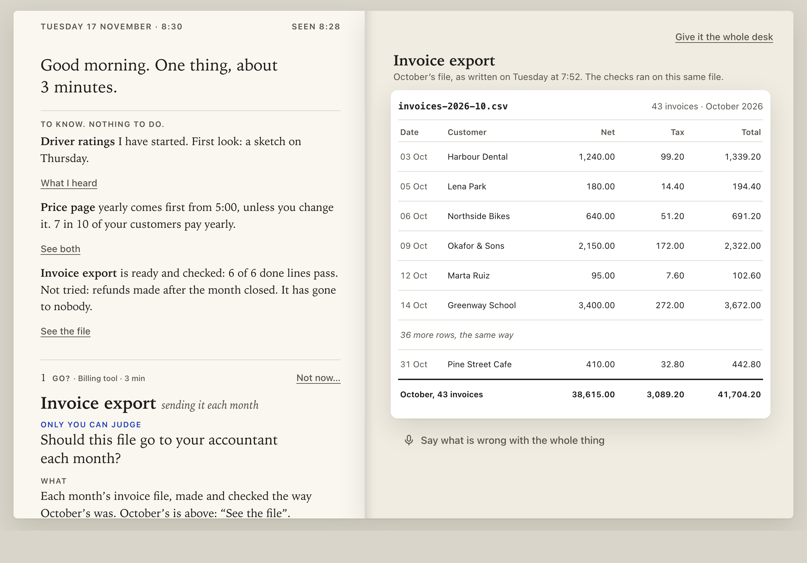
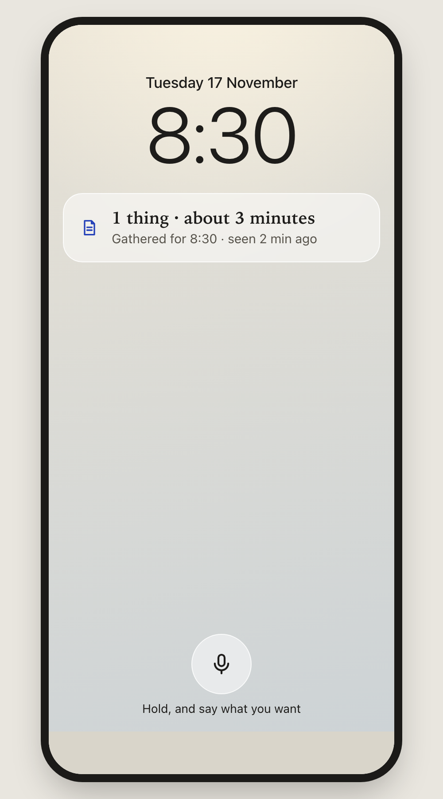
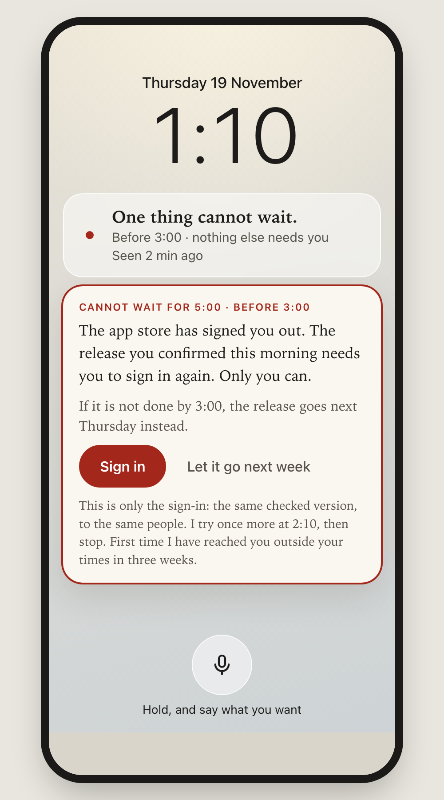

What you would see
One day at your desk. About two minutes. One question at the end.
Today a goal comes back to you about five times before it is done, and nine times in ten you are the one who notices when work has stopped. This is built to cut the first by up to half and to take the second off you. Desk first; the iPad and the phone are at the end. These are pictures of the design. Nothing here is running yet.
1 · Always there
One line in the menu bar, the same on all three Macs.
You never go and look, on any screen. It is calm most of the day and changes only when something needs you. Click it and the page below opens on that Mac.
New since your note on how you work. Drawn today, not yet reviewed by anyone.
Most of the day
Nothing needs you before 5:00Tue 12:40
At a time you chose
1 thing · about 3 minutesTue 8:30
Rarely: only you can do it, and it cannot wait
One thing cannot wait · before 3:00Thu 1:10
When it is blind, it says so
I cannot see 2 of your 40 goalsThu 9:55
2 · You open it
What you only need to know, then the one thing only you can decide.
Left page: the note to you. Right page: the thing itself, already open. You do not go and find it.
3 · You ask for something
Type it or say it. It starts.
Left: what it heard, which you can fix whenever you like. Right: every goal in every project on one page, each with its date. Nothing waits for you.
4 · A result reaches you
Someone other than its maker has already used it.
You get a recording of that, the one question that is yours, and a plain line for what was not checked.
5 · You point at what is wrong
It comes back with each mark answered, in place.
Checked again before you see it. Before and now, side by side. You do not re-read the whole thing.
6 · Before anything that cannot be undone
It stops, and says back exactly what will go out.
What is in it, to whom, what cannot be taken back. You press and hold. If anything in it changes afterwards, it asks again.
7 · When things go wrong
If it cannot see, it says so. It interrupts only when something cannot wait and only you can do it.
Silence means all is well only because it tells you when it is blind.
And the one interruption:
Away from the desk
The iPad shows the same pages. The phone is for the exception.
Every page works at every width. On the phone the same one line sits on the lock screen.
iPad Pro
Phone: the line
Phone: the interruption
Only you can judge
Is this the direction?
Say yes, or say what is off in a sentence. Reply in the chat.
On a yes, the next thing I bring you is one go or no-go: the first piece to build, which is the check in picture 4.
Not checked: none of this has run. The times and figures inside the pictures are made up. The menu-bar line is new today and no one has reviewed it.